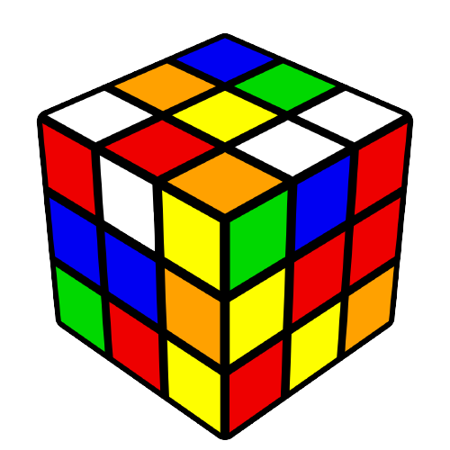
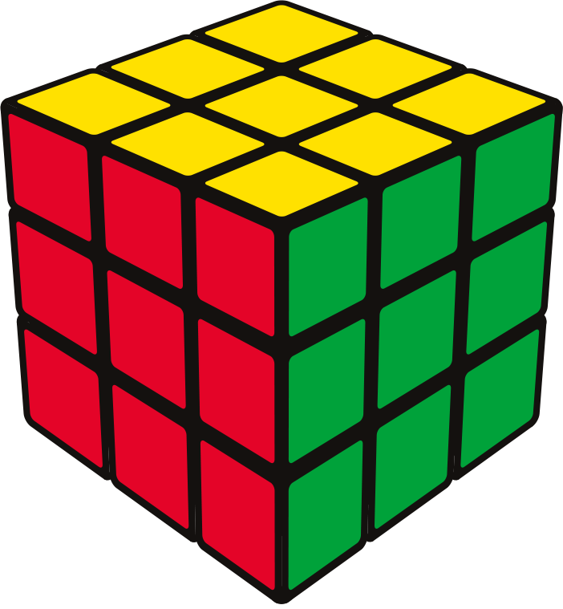
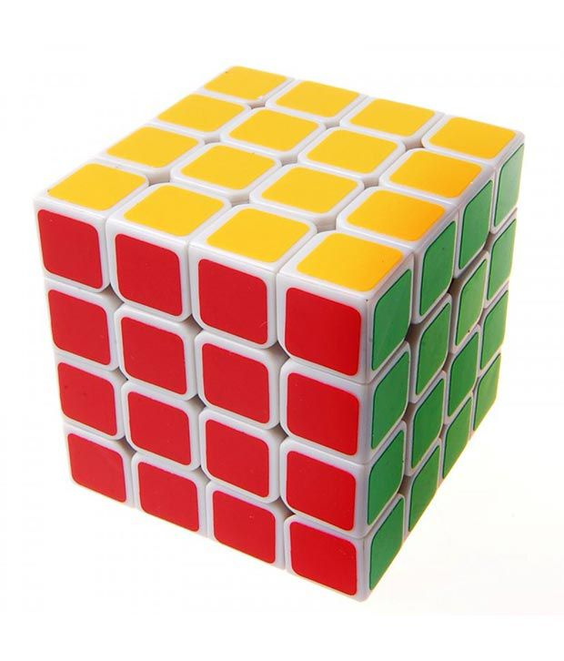
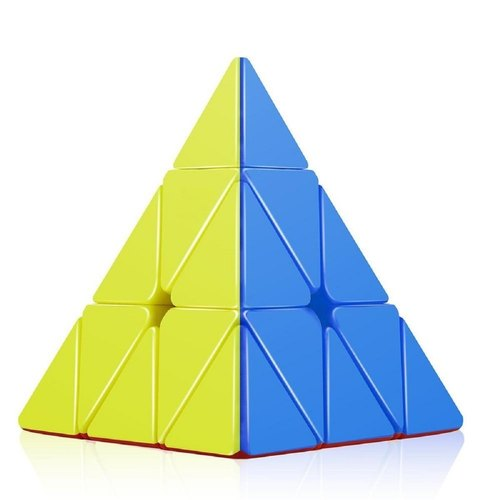

I love solving cubes.
Hi!
My name is Stuti and I welcome you to my website.I am 11 years old and I am in 6th grade. I like playing games and watching cartoon. My favorite cartoon is Ninja Hattori. It is a cartoon about a ninja named Hattori, his younger brother and their dog.
Solving cube

Solving cube is what I do in my free time. It is very interesting to solve a cube but as I started learning it I was bored, but know when I know how to solve a cube it became a fun activity to do in free time. As I gained intrest I asked my mother to buy me new cubes of different shapes and sizes.
3*3 CUBE
4*4 CUBE
MAGIC CUBE

PYRAMID CUBE
The Rubik's Cube is a 3-D combination puzzle invented in 1974 by Hungarian sculptor and professor of architecture Ernő Rubik. Originally called the Magic Cube, the puzzle was licensed by Rubik to be sold by Ideal Toy Corp. in 1980 via businessman Tibor Laczi and Seven Towns founder Tom Kremer. Rubik's Cube won the 1980 German Game of the Year special award for Best Puzzle. As of January 2009, 350 million cubes had been sold worldwide, making it the world's top-selling puzzle game. It is widely considered to be the world's best-selling toy.
On the original classic Rubik's Cube, each of the six faces was covered by nine stickers, each of one of six solid colours: white, red, blue, orange, green, and yellow. Some later versions of the cube have been updated to use coloured plastic panels instead, which prevents peeling and fading. In models as of 1988, white is opposite yellow, blue is opposite green, and orange is opposite red, and the red, white, and blue are arranged in that order in a clockwise arrangement. On early cubes, the position of the colours varied from cube to cube. An internal pivot mechanism enables each face to turn independently, thus mixing up the colours. For the puzzle to be solved, each face must be returned to have only one colour. Similar puzzles have now been produced with various numbers of sides, dimensions, and stickers, not all of them by Rubik.
I not only solve cubes, I also like reading Geronimo Stilton books.Geronimo Stilton's books are funny and adventurous. There is mostly a new adventure in the story. I have read 5-6 books and they all were interesting. The books I have read are The super Chef Contest, Rumble in the Jungle, My Name is Stilton Geronimo Stilton, Get into Gear Stilton, Mouse in Space.The author of Geronimo Stilton is Elisabetta Dami.
The Super Chef Contest- There was a major event coming up: The Super Chef Contest! The winner is declared the best chef on Mouse Island. Geronimo's cousin Trap decided to enter the competition--and he brought Geronimo along as an assistant! Geronimo don't know how to cook fancy dishes and he didn't thought Trap know either. Geronimo was in for a delicious adventure!
Rumble In The Jungle- Geronimo Stilton, was off to the wildest part of Brazil -- the Amazon jungle! He ended up on a hunt for a rare crystal treasure, which was stolen from a native tribe in the heart of the forest. He'd encounter alligators, snakes, piranhas, and other dangers on his way. What an adventure!
My Name Is Stilton, Geronimo Stilton- Have you met Geronimo's very young assistant editor, Pinky Pick? She is only twelve years old, but she is one of the cleverest mice Geronimo have ever known. If you've ever wondered how Pinky came to work for Geronimo at The Rodent's Gazette, this is the book for you! It's a looooong story... and one that's full of adventure, laughs, and of course, like all of Geronimo's books, lots of embarrassing moments for yours truly!
Get Into Gear Stilton- Geronimo Stilton, was selected by the mayor to give a special driving demonstration, but his drivers' license had expired! He had only a week to relearn everything to pass the test for a new one. Geronimo didn't knew that his lessons would introduce him to a talking robot car! It was up to them to stop a thief and make the roads safer for everyone.
Mouse In Space- New Mouse City was in danger! An evil professor was threatening them all with his terrible inventions. The authorities called upon Geronimo Stilton, to thwart his plans by traveling on a top secret mission--to outer space! Geronimo was totally unprepared to go. But, his trip was out of this world!
Click on the image to get information

Feliks Zemdegs

Elisabetta Dami